▶ A Frame Grabber that supports CoaXPress V2.0 protocol is required.
▶ If the Frame Grabber does not meet the specifications below, connection may not be possible.
CoaXPress CXP-12 / 1-Channel or more
GenApi V3.2 or higher, plus
SFNC V2.5 or higher
1.2 SDK
▶ The camera can be connected and set up using the SDK provided by the Frame Grabber manufacturer.
1.3 Precautions
▶ Operating temperature (Performance guarantee temperature)
Case temperature: 0℃ ~ +35℃
Sensor temperature: +15℃
Data output may vary depending on ambient temperature changes, so keep the temperature constant.
Depending on changes in surrounding temperature, power consumption due to sensor cooling may increase.
The external case temperature is recommended to be below 50℃. If it exceeds this, appropriate heat dissipation measures are required and no physical contact is required.
You must be careful.
▶ Be careful of water leaks and moisture
Since the product itself does not have a waterproof function, you must be careful not to expose it to excessive moisture.
▶ Magnetic and electric fields
When input/output signals are exposed to strong magnetic and electric fields of high-speed, minute voltages and currents, signal distortion may occur.
So you need to be careful.
▶ Ventilation
Power consumption varies depending on the usage environment, but since power consumption is high, seal the area around the product or ventilate it.
It must maintain ventilation without blocking the flow.
▶ Product performance may vary depending on cable characteristics.
▶ In order to comply with CE standards, use standard CoaXPress™ Cable or a cable with good shielding characteristics of the same level or higher.
You have to use it. (Recommended Cable: Belden 1694A cable)
▶ The product may be modified without notice to improve its functions and performance.
Selects the method for accumulating adjacent pixels. - Average : Outputs the average of adjacent pixels - Sum : Outputs the sum of adjacent pixels
Sum
Binning Horizontal / Binning Vertical
1
Reduces image resolution and accumulates adjacent pixels for output. - 1 : Output original image - 2 : Output binned image
2
＊However, if 'Exposure Time' is longer than Frame Period (=1/Max.FrameRate), the Frame Rate may decrease. (Exposure
priority mode)
4.1.3 Decimation
This is a function that reads quickly from the sensor, skipping 1 pixel in the horizontal or vertical direction. Year of Image
The resolution is reduced by half while the frame rate is increased.
DecimationHorizontal = 1
DecimationVertical = 1
DecimationHorizontal = 1
DecimationVertical = 2
DecimationHorizontal = 2
DecimationVertical = 1
Figure 3 – Decimation (1)
Feature
Value
Description
Decimation Horizontal / Decimation Vertical
1
Reduces image resolution and increases frame rate. - 1 : Output original image - 2 : Output decimated image
2
＊The Frame Rate changed due to Decimation can be checked through the ‘Resulting Frame Rate’ Feature.
＊However, if 'Exposure Time' is longer than Frame Period (=1/Max.FrameRate), the Frame Rate may decrease. (Exposure
priority mode)
4.1.4 Reverse
This is the function to output the image by inverting the left/right or top/bottom.
Original Reverse X
Reverse Y Reverse X, Y
Figure 4 – Reverse Image (2)
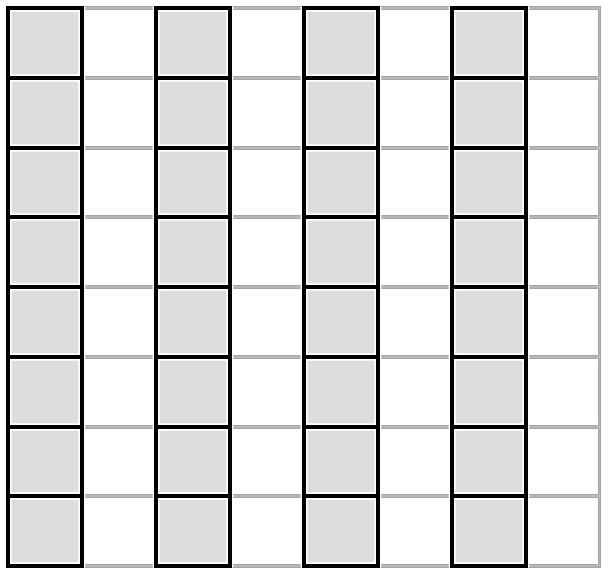
Figure 4 – Reverse Image (3)
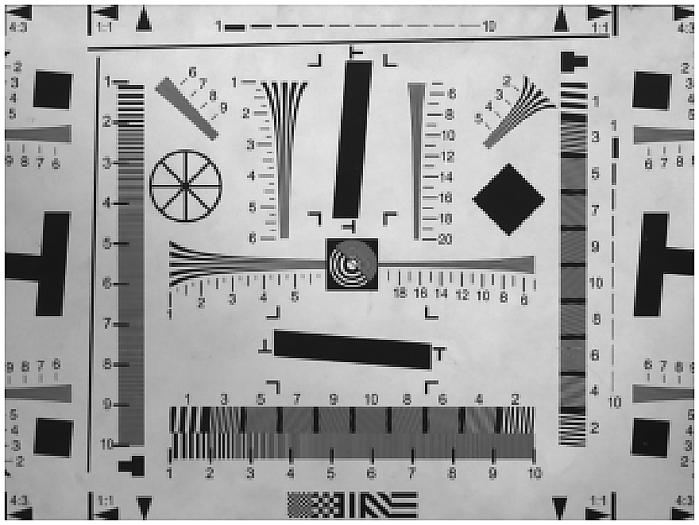
Figure 4 – Reverse Image (4)
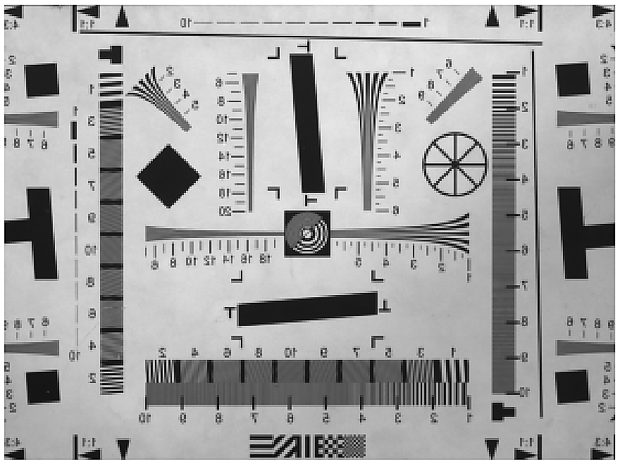
Figure 4 – Reverse Image (5)
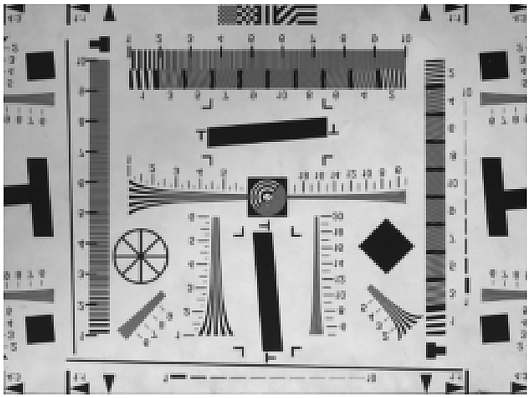
Figure 4 – Reverse Image (6)
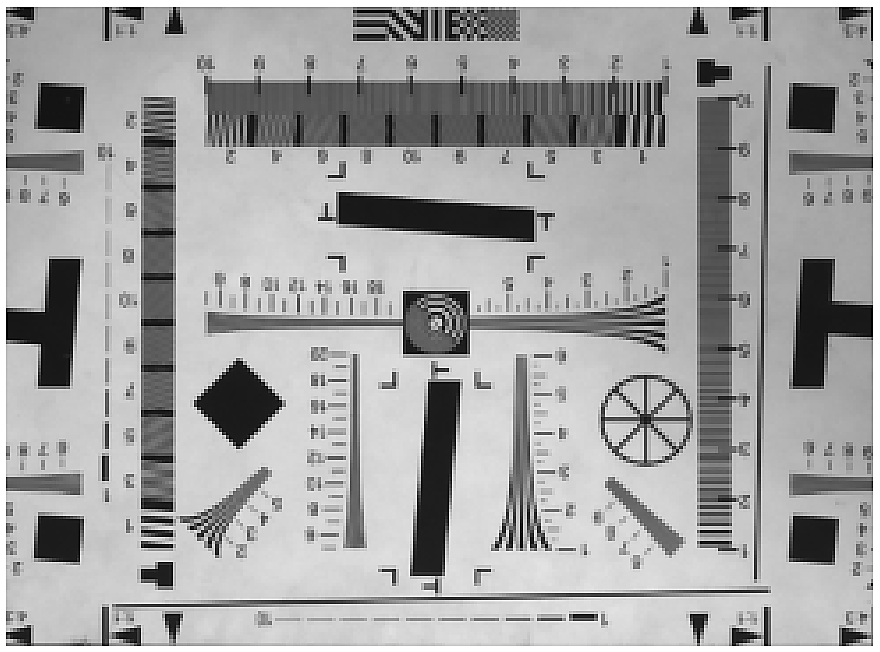
Figure 4 – Reverse Image (7)
Feature
Value
Description
ReverseX / ReverseY
True
Flips the image horizontally or vertically.
False
＊When ROI and Reverse are used simultaneously, the ROI function is applied from the reversed image. In other words, reverse as shown below.
When activated, the position of (0,0) Pixel, which is the starting coordinate of the Image, is reversed. Because of this, the same area as before applying Reverse
To capture an image, an Image Offset equal to Total Size – ROI Size is required.
Image Size : 2592 * 2056
Offset X : 0
Offset Y : 0
Reverse X : False
Reverse Y : False
Image Size : 1296 * 1028
Offset X : 0
Offset Y : 0
Reverse X : False
Reverse Y : False
Image Size : 1296 * 1028
Offset X : 0
Offset Y : 0
Reverse X : True
Reverse Y : False
Image Size : 1296 * 1028
Offset X : 1296
Offset Y : 0
Reverse X : True
Reverse Y : False
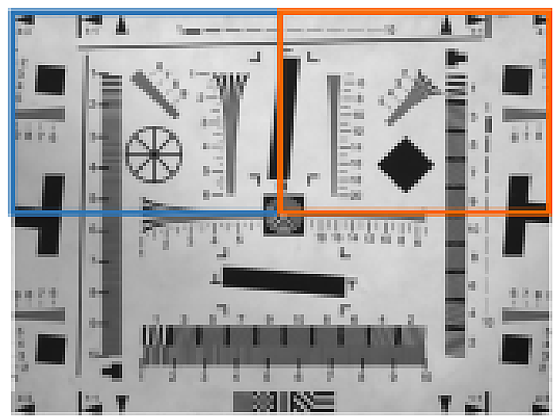
Figure 5 – ROI & Reverse Image (1)
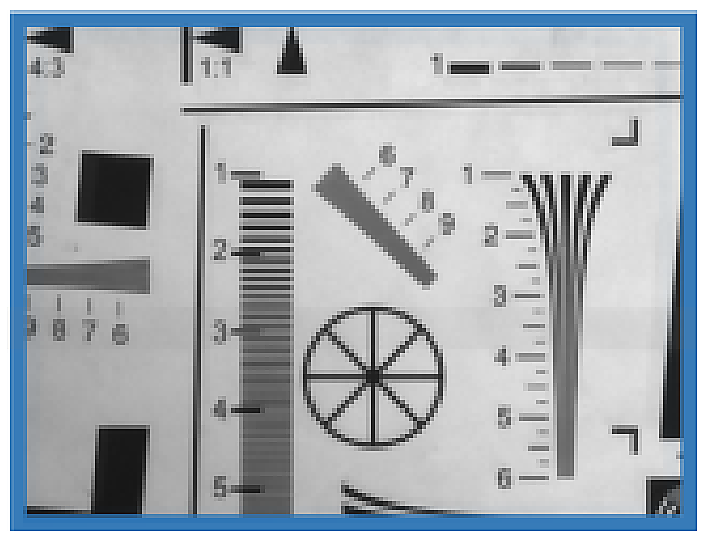
Figure 5 – ROI & Reverse Image (2)
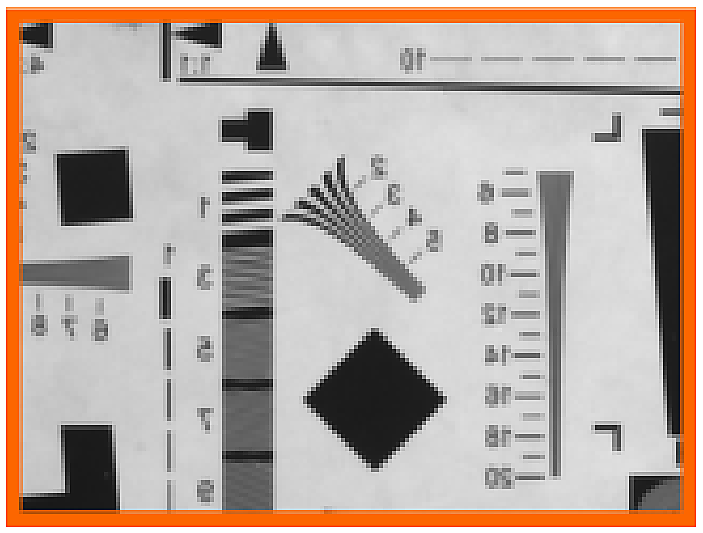
Figure 5 – ROI & Reverse Image (3)
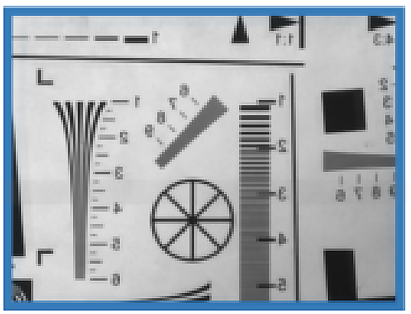
Figure 5 – ROI & Reverse Image (4)
4.1.5 ADC Bit Depth
This is a function to set the bit depth when converting data from sensor to digital. Depending on the ADC Bit Depth setting
The Max Frame Rate is different, and in the same environment, the brightness of the video in 8bit mode is 10bit, and the brightness of the video is 12bit in 12bit mode.
It is about 4 times brighter than
Feature
Value
Description
ADC Bit Depth
8bit
Selects the sensor digital data depth.
10bit
12bit
4.1.6 Pixel Format
Set the Pixel Format of the image output from the camera. There is a difference in image transfer amount for each pixel format.
Therefore, the frame rate may change depending on the bandwidth.
Feature
Value
Description
Pixel Format
Mono 8
Sets the format of image data transmitted to the Frame Grabber.
Mono 10
Mono 12
＊The format of image data cannot be larger than the ‘ADC Bit Depth’ of the sensor.
＊The 'Pixel Format' supported for each model is as follows.
Table 2 - Pixel Format Values
Model
Pixel Format Support
All models
Mono 8, Mono 10, Mono 12
＊Data processing method according to ‘Pixel Format’ is as follows.
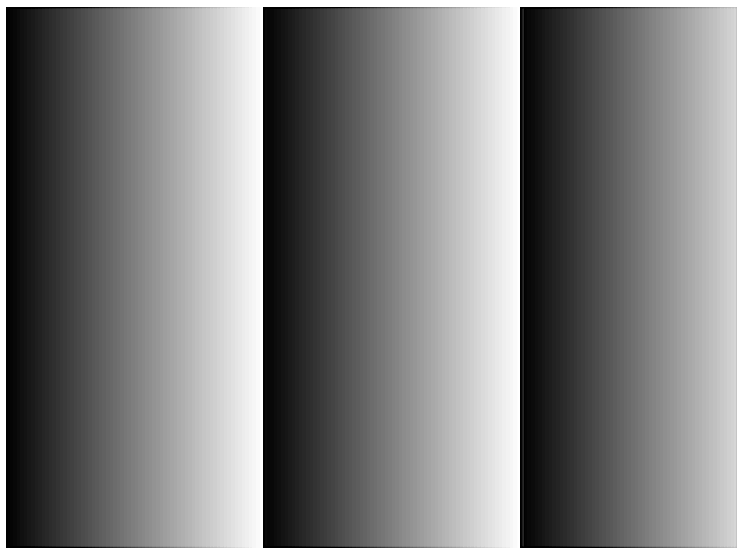
Figure 6 – Pixel Format (1)
4.1.7 Test Pattern
At the intermediate stage of image processing, the image is replaced with a test pattern and transmitted. Activate the Test Pattern function
Even if enabled, functions related to image acquisition such as ROI Size, Trigger input, and Acquisition Frame Rate are valid.
all. Test Pattern Image is created in 8bit gray level (0~255DN).
This is a function to set the camera's image acquisition time and method.
Feature
Value
Description
Acquisition Mode
Continuous
Acquires images from the Acquisition Start command until the condition below. - Continuous : Continues acquisition until the Acquisition Stop command
Acquisition Start
Command
Starts image acquisition by command input.
Acquisition Stop
Command
Stops image acquisition by command input.
Acquisition Frame Rate
1 ~ Max.FPS
Sets the desired frame rate in Freerun Mode.
Acquisition Frame Rate Enable
Off
Enables or disables Acquisition Frame Rate in Freerun Mode.
On
Resulting Frame Rate
(Read Only)
Outputs the actual camera frame rate in Freerun Mode.
＊After entering the 'Acquisition Start' command, the image is acquired by Internal Freerun Counter or External Trigger.
＊The 'Acquisition Start' command is also input when executing streaming-related functions in the frame grabber dedicated program.
＊Max.FPS changes depending on ROI, Decimation, 'Pixel Format', 'Exposure Time', and 'CXP Link Configuration' settings.
＊Freerun Mode is ‘Trigger Mode’ = ‘Off’.
4.2.2 Exposure Control
Set the camera exposure method. Exposure start time is determined by Internal Freerun Counter or External Trigger.
Once determined, Timed Shutter exposes for the amount of time set in Exposure Time, and Trigger Width Shutter is a trigger.
Exposure is as much as the pulse width of the trigger in the mode. Exposure Time is set to Timed Shutter when Exposure Mode is set to Timed Shutter.
Applies only to right.
Feature
Value
Description
Exposure Mode
Timed
- Timed : Exposure time is controlled by the Exposure Time setting - Trigger Width : Exposure time is controlled by the pulse width of the external trigger
Trigger Width
Exposure Time
1 ~ 3,000,000 (Unit : us)
Sets the exposure time for Timed Shutter.
＊However, if 'Exposure Time' is longer than Frame Period (=1/Max.FrameRate), the Frame Rate may decrease. (Exposure
priority mode)
＊If 'Trigger Mode' is 'Off' or 'Trigger Source' is 'Software', it operates as a 'Timed' Shutter.
＊Set ‘Counter Event Source’ in the ‘Counter and Timer Control’ category to ‘Exposure Start’ or ‘Exposure Stop’
When you do this, the start and end times of exposure are output as 'Counter Value'. Current with 'Counter Update Feature' Command
You can update the counter. This Counter is initialized to 0 by the 'Counter Reset' Command.
＊There is a certain amount of time delay (Hardware Delay+Exposure Start Delay) from the external trigger input to the actual exposure of the sensor.
(Refer to Appendix B, C)
＊There is an error (Exposure Offset) between 'Exposure Time' and the actual exposure time. (Refer to Appendix C)
Exposure Auto is a function where the camera automatically adjusts the Exposure Time to acquire an image with the desired brightness.
It can be used when Exposure Mode is Timed.
Feature
Value
Description
Exposure Auto
Off
- Off : Set Exposure Time manually - Once : Turns Exposure Auto off when the image reaches the target brightness - Continuous : Continuously adjusts Exposure Time to maintain target brightness
Once
Continuous
Auto Exposure Target
0 ~ 255 (DN @8bit)
Sets the desired average brightness.
Auto Exposure Time Lower Limit
100 ~ 3,000,000 (Unit : us)
Sets the variable Exposure Time range for Exposure Auto. Lower Limit ≤ Upper Limit
Auto Exposure Time Upper Limit
Exposure Update Feature
Command
Updates Exposure Time.
＊However, if 'Exposure Time' is longer than Frame Period (=1/Max.FrameRate), the Frame Rate may decrease. (Exposure
priority mode)
＊If the 'Exposure Time' is too short, a flickering image may be obtained due to lighting, etc.
＊When using 'Exposure Auto' and 'Gain Auto' at the same time, the operation varies depending on the brightness of the Image and Target.
＊If the brightness of the image needs to be increased, 'Gain Auto' is applied after applying 'Exposure Auto'.
＊If the brightness of the image needs to be reduced, 'Exposure Auto' is applied after applying 'Gain Auto'.
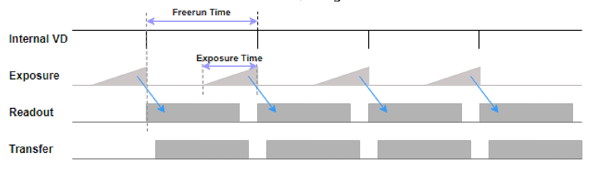
Figure 9 – Freerun Mode
4.2.3 Trigger Mode Control
Controls image acquisition method and timing. The image acquisition method is largely Freerun Mode (Trigger Mode =
Off) and Trigger Mode, and the acquisition delay can be set.
When Trigger Mode is Off, the camera operates in Freerun Mode. Freerun Mode operates in the current settings.
Internal Counter and VD signals are generated based on the maximum frame rate that can be achieved. Exposure set at the same time
An exposure signal is generated according to the time, operates the sensor, acquires the image, and transmits it to the frame grabber.
When Trigger Mode is On, the camera operates in Trigger Mode. Trigger Mode exposes with External Trigger.
You can also start and adjust the exposure time. Once the sensor completes exposure, the rest is the same as Freerun Mode.
The image is acquired and transmitted to the Frame Grabber.
Feature
Value
Description
Trigger Mode
Off
- Off : Operates in Freerun Mode - On : Operates in Trigger Mode
On
Trigger Software
Command
Manually inputs a software trigger.
Trigger Source
CXP_Trigger
- CXP_Trigger : Trigger generated by the Frame Grabber - Line 4 ~ 7 : External trigger through the 12-pin circular connector (see 3.5 External I/O Connector) - Software : Trigger generated internally by the Trigger Software command
Line 4
Line 5
Line 6
Line 7
Software
Trigger Activation
Rising Edge
Reference edge used by the camera to recognize the trigger.
Trigger Overlap
Off
- Off : Prevents the next exposure from starting during readout - ReadOut : Allows the next exposure to start during readout
ReadOut
＊In Freerun Mode, if 'Acquisition Frame Rate Enable' is 'On', it operates as 'Acquisition Frame Rate', and if 'Acquisition Frame Rate Enable' is 'Off', it operates as 'Acquisition Frame Rate'.
In this case, it operates at the maximum frame rate that can operate in the current settings.
＊If 'Trigger Mode' is 'On', it is triggered by CXP Trigger, External Trigger, or Software Trigger according to the 'Trigger Source' setting.
It works.
＊CXP Trigger must be set separately in the Frame Grabber program.
＊'Trigger Activation' is fixed to 'Rising Edge', so you must use the 'Line Inverter' function to change the phase of the trigger.
do. (Refer to 4.3 Digital I/O Control)
＊If you set 'Counter Event Source' in the 'Counter and Timer Control' category to 'External Trigger Start', the input will be triggered by the camera.
The total number of valid triggers is displayed as 'Counter Value'. Update the current counter with the ‘Counter Update Feature’ Command.
You can update. This Counter is initialized to 0 by the 'Counter Reset' Command.
＊The operation according to the 'Trigger Overlap' setting is as follows.
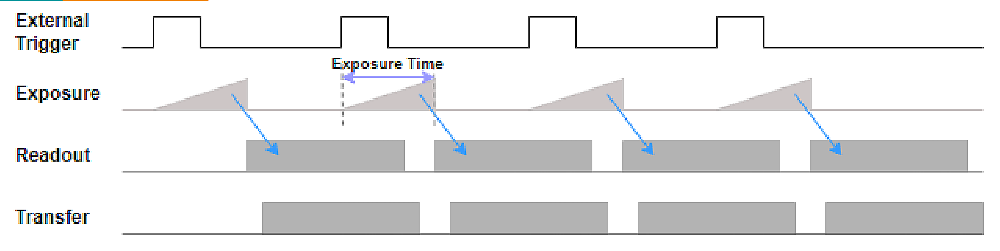
Figure 10 – Trigger Mode & Timed Shutter
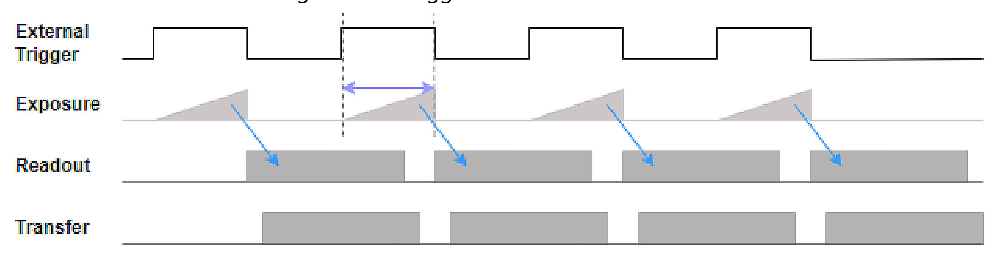
Figure 11 – Trigger Mode & Trigger Width Shutter
Trigger Delay is a function that operates by delaying the sensor's exposure for a certain period of time from the trigger input. camera
Trigger Delay is used when the timing of the input trigger does not match the timing of the external environment, such as lighting or the location of the subject.
You can obtain a clearer image using this.
Line Debounce Time is a function that removes chattering noise of the trigger signal passing through external I/O.
It's a skill. Since only signals that remain activated for more than a certain period of time are judged as valid inputs, delayed
Trigger is input.
Feature
Value
Description
Trigger Delay
0 ~ 3,000,000 (Unit : us)
Sets the delay time from trigger input to sensor exposure.
Line Debounce Time
0 ~ 882 (Unit : us)
Sets Line Debounce Time.
＊New triggers entered while the trigger is delayed are ignored. If ‘Trigger Delay’ is greater than the input trigger period,
In case of missing trigger, the frame rate may decrease. (Refer to Figure 14)
＊There is a certain amount of time delay (Hardware Delay+Exposure Start Delay) from the external trigger input to the actual exposure of the sensor.
(Refer to Appendix B, C)
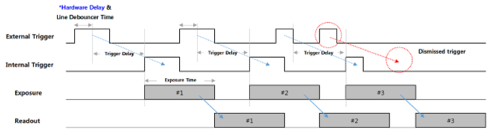
Figure 12 – Trigger Overlap : Off
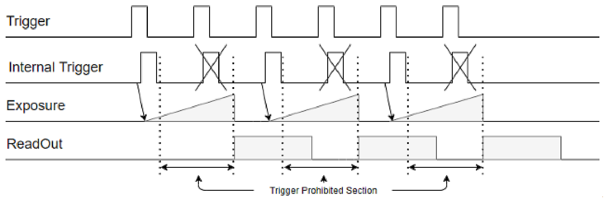
Figure 13 – Trigger Overlap : Readout
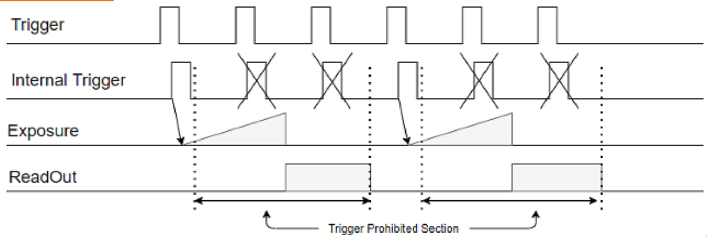
Figure 14 – Trigger Delay & Line Debounce with Trigger Overlap Enable
4.3 Digital I/O Control
This function sets external I/O signals.
Feature
Value
Description
Line Selector
Line 1
Selects the line to configure. - Line 1 : CXP Trigger - Line 4, 5 : Direct I/O - Line 6, 7 : OptoCoupled Input
Line 4
Line 5
Line 6
Line 7
Line Mode
Input
Sets input/output for the selected line. Line 1, Line 6, and Line 7 support input only. Line 4 and Line 5 support input/output.
Output
Line Inverter
True
Sets the phase of the selected line. - True : Inverts the line input/output phase by 180 degrees - False : Keeps the line input/output phase
False
Line Status
(Read Only)
Outputs the current status of the selected line.
Line Status All
(Read Only)
Outputs the current status of all lines as 4 bits.
Line Status Update Feature
Command
Updates the current status of all lines.
＊If 'Exposure Mode' is 'Trigger Width', 'Line Inverter' may affect the brightness of the image.
＊In the case of 'Line Status' and 'Line Status All', 'True' is Logical High and 'False' is Logical Low.
＊If the I/O Connector is not connected and is in a floating state, 'Line Status' outputs 'True'.
＊Ex) 'Line Status All' = '0xe'
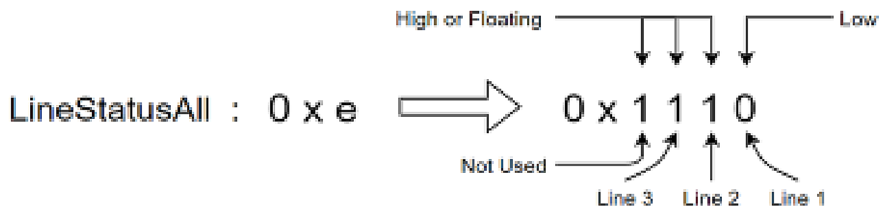
Figure 15 – Line Status All Data Description
Feature
Value
Description
Line Source
Off
Selects the waveform to output as the strobe signal. - Off : Strobe off - Timer Active : Outputs Timer Strobe signal (see 4.4.2 Timer Control) - Exposure Active : Outputs a strobe signal active during actual exposure - User Output 1, 2 : Outputs User Output Value as the strobe signal
Timer Active
Exposure Active
User Output 1
User Output 2
User Output Selector
User Output 1
Selects the User Output to configure.
User Output 2
Feature
Value
Description
User Output Value
True
- True : Sets the selected User Output to High - False : Sets the selected User Output to Low
False
4.4 Counter and Timer Control
4.4.1 Counter Control
This function monitors camera movement. The process where a camera receives a trigger, exposes it, and outputs an image.
You can monitor with a step-by-step counter. In addition, camera specifications such as trigger input at a speed faster than the frame cycle
It is possible to check for signal input exceeding .
Feature
Value
Description
Counter Event Source
External Trigger Start
Selects the counter. - External Trigger Start : Number of external/software trigger inputs - Exposure Start : Number of exposure starts - Exposure Stop : Number of exposure stops - Frame End : Number of readout frames - Exposure Start Missed : Number of trigger inputs during exposure - Exposure Stop Missed : Number of exposure stops during readout
Exposure Start
Exposure Stop
Frame End
Exposure Start Missed
Exposure Stop Missed
Counter Value
(Read Only)
Outputs the value of the selected counter.
Counter Reset
Command
Resets all counter values to 0.
Counter Update Feature
Command
Updates Counter Value.
＊'Exposure Start Missed' can increase when 'Trigger Mode' = 'On' and 'Exposure Mode' is 'Timed'.
＊'Exposure Stop Missed' can increase when 'Trigger Mode' = 'On' and 'Exposure Mode' is 'Trigger Width'.
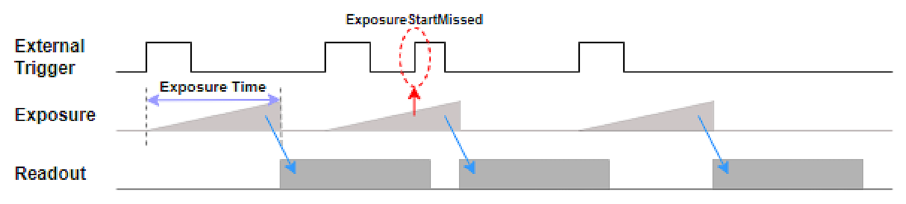
Figure 16 – ExposureStartMissed
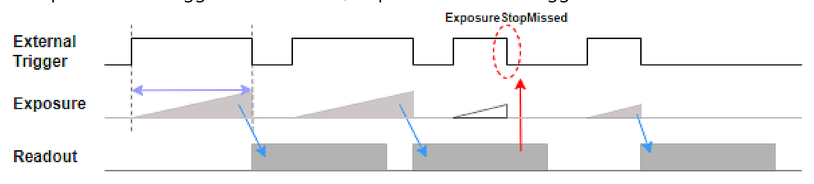
Figure 17 – ExposureStopMissed
4.4.2 Timer Control
This is a function to set the strobe signal output outside the camera. In Freerun Mode, Timer Strobe signal is not generated.
The starting point can be set to the exposure start or Internal VD Start point. The point at which the VD is initialized is Shutter
Since the timing of operation is different, a Timer Delay may be necessary to synchronize with the lighting.
In Trigger Mode, the generation time of the Timer Strobe signal is set to the start of exposure or external trigger input.
You can do it. When creating a Timer Strobe at the time of External Trigger input, Trgger Delay and Hardware
Timer Delay may be necessary to synchronize with the actual exposure time that is delayed due to the delay.
Feature
Value
Description
Timer Selector
Exposure
Selects the Timer Strobe start point. - Exposure : Outputs Timer Strobe based on the actual exposure start - External Trigger : Outputs Timer Strobe based on trigger input - Internal VD : Outputs Timer Strobe based on Internal Counter Reset
External Trigger
Internal VD
Timer Duration
0 ~ 3,000,000 (Unit : us)
Sets the pulse width of Timer Strobe.
Timer Delay
0 ~ 3,000,000 (Unit : us)
Sets the Timer Strobe output delay from the selected start point.
＊In Trigger Mode, the Internal Counter does not operate, so 'Internal VD' cannot be used.
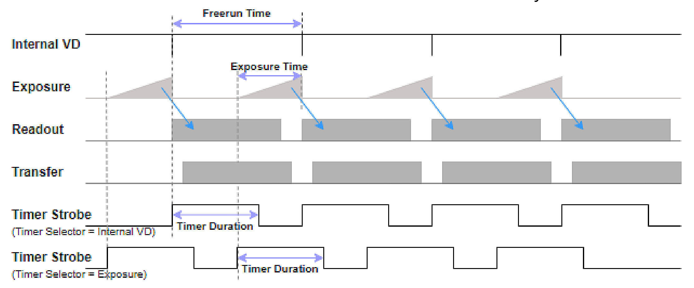
Figure 18 – Timer Strobe of Freerun Mode
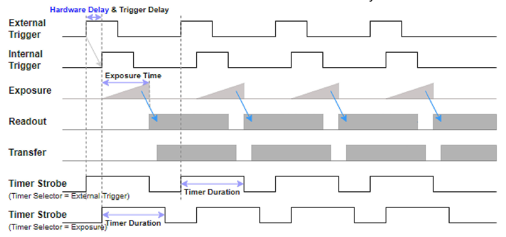
Figure 19 – Timer Strobe of Trigger Mode
4.5 Analog Control
4.5.1 Gain Control
This function adjusts gain. The sensitivity of the image can be improved without reducing the frame rate, but the
Noise may also increase.
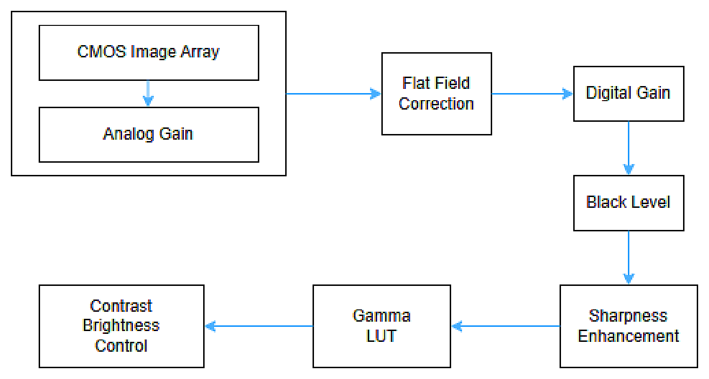
Figure 20 – Block Diagram of Analog Control
Feature
Value
Description
Gain Selector
All
Selects the gain to configure. The two gains are independent and can be set to different values. - All : Sensor Analog Gain - DigitalAll : Digital Gain
DigitalAll
Gain Raw
All : 0 ~ 240 DigitalAll : 0 ~ 7168
Sets the selected gain as a raw value. Sensor Analog Gain raw range varies by product and setting.
Gain Abs
All : 1x ~ 16x DigitalAll : 1x ~ 8x
Sets the selected gain as a multiplier. Sensor Analog Gain absolute range varies by product and setting.
＊'Gain Raw' and 'Gain Abs' supported for each model are as follows.
Table 3 - Analog Gain Values
Model
Analog Gain Raw Support
Analog Gain Abs Support
HX-A130SW
0~60(ADC 8), 0 ~ 180(ADC 10, 12)
1x ~ 2x(ADC 8), 1x ~ 8x(ADC 10, 12)
HX-A530SW
0 ~ 240
1x ~ 16x
Gain Auto is a function where the camera automatically adjusts the analog gain to obtain an image with the desired brightness.
Feature
Value
Description
Gain Auto
Off
- Off : Set Gain manually - Once : Turns Gain Auto off when the image reaches target brightness - Continuous : Continuously adjusts Gain to maintain target brightness
Once
Continuous
Gain Update Feature
Command
Updates Gain.
＊The target of 'Gain Auto' is 'Auto Exposure Target'.
＊When using 'Gain Auto' and 'Exposure Auto' at the same time, the operation varies depending on the brightness of the Image and Target.
＊If the brightness of the image needs to be increased, 'Gain Auto' is applied after applying 'Exposure Auto'.
＊If the brightness of the image needs to be reduced, 'Exposure Auto' is applied after applying 'Gain Auto'.
4.5.2 Black Level Control
This function adjusts the black level. You can change the Offset of the Image.
Feature
Value
Description
Black Level Selector
All
Selects the Black Level to configure. - All : Sensor Analog Black Level - DigitalAll : Digital Black Level
DigitalAll
Black Level
0 ~ 4095
Sets the selected Black Level. - All : 0 ~ 255 (ADC 8bit), 0 ~ 1023 (ADC 10bit), 0 ~ 4095 (ADC 12bit) - DigitalAll : 0 ~ 4095
4.5.3 Gamma Control
This is a function to adjust gamma. You can correct the contrast of the image.
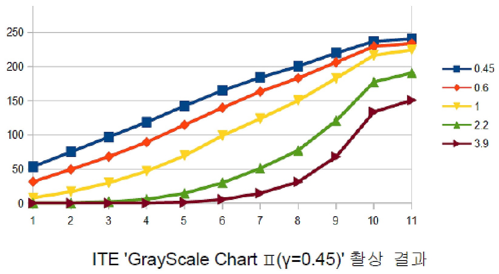
Figure 21 – ITE 'GrayScale ChartⅡ (y=0.45)'
Feature
Value
Description
Gamma Enable
True
Enables or disables Gamma.
False
Gamma
0 ~ 3.99
Sets Gamma.
＊The Gamma function cannot be used simultaneously with the LUT function. When the Gamma function is enabled, the LUT function is disabled.
4.6 LUT Control
The LUT (Look Up Table) function is a function that converts digital pixel values by matching them 1:1 to the output value of the table's input value.
no see. Each Index (Input Image) in the table is replaced with a pixel of a predefined LUT Value (Output Image).
Feature
Value
Description
LUT Enable
True
Enables or disables LUT.
False
LUT Index
0 ~ 1023
Selects the LUT Index.
LUT Value
0 ~ 1023
Sets the output value of the selected LUT Index.
＊The LUT function cannot be used simultaneously with the Gamma function. When the LUT function is enabled, the Gamma function is disabled.
＊Ex) When using a table in the form of y=2x, low-illuminance pixels can see an improvement in sensitivity, while high-illuminance pixels are saturated.
Therefore, loss in dynamic range occurs.
Table 4 - LUT Data
Index
0
1
2
3
...
256
...
510
511
512
513
Value
0
2
4
6
…
512
...
1022
1023
1023
1023
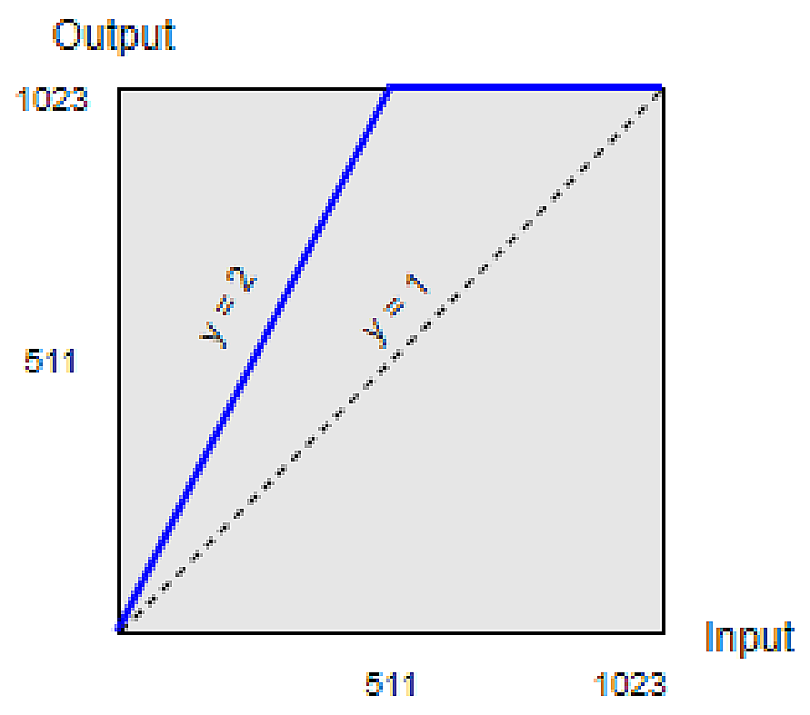
Figure 22 – Look Up Table Graph
4.7 Defect Pixel Control
This function manages the camera’s defect pixels. Correction is made for defective pixels at the time of shipment. but use
You can correct pixels that you consider to be bad pixels by additionally defining them. Camera's User Set 1 to 3 area
Up to 1024 defective pixels can be saved.
Feature
Value
Description
DefectFilter Enable
Off
Enables or disables Defect Filter.
On
Defectfilter Test Mode Selector
Off
Checks the position of pixels where Defect Filter is applied. - Off : Output sensor image - Mark Black : Mark defect pixels as dark pixels - Mark White : Mark defect pixels as white pixels - Mark White with Black Background : Mark defect pixels as white pixels on a black background
Mark Black
Mark White
Mark White with Black Background
Defect Pixel Replace Count
1 ~ 1024
Number of defect pixels to correct.
Defect Pixel Index
0 ~ 1023
Index of the defect pixel to correct.
Feature
Value
Description
Defect Pixel X Coordinate
0 ~ WidthMax-1
X-axis coordinate of the defect pixel to correct. Pixel coordinates start from 0.
Defect Pixel Y Coordinate
0 ~ HeightMax-1
Y-axis coordinate of the defect pixel to correct. Pixel coordinates start from 0.
Defect Pixel Replacement
Command
Applies the entered defect pixel information.
＊Ex) 제품 출하 시 20개의 Defect Pixel이 보정된 상태에서 사용자가 두 개의 Pixel을 추가하는 경우
Table 5 - User Define Example
DefectPixel ReplaceCount
DefectPixel Index
DefectPixel XCoordinate
DefectPixel YCoordinate
Remarks
19
18
...
...
Factory Defined
20
19
...
...
Factory Defined
21
20
(156, 31)
(1131, 125)
User Defined
22
21
(208, 114)
(321, 611)
User Defined
＊보정 이후에는 'User Set Save' Command를 이용하여 원하는 User Set 영역에 저장해야 합니다.
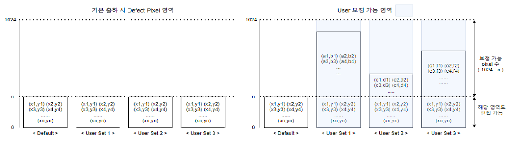
Figure 23 – Defect Pixel Access Area
4.8 Flat Field Correction
Flat Field Correction (FFC) is a function that uniformly corrects the brightness value of the captured image. Brightness value is not uniform
Other causes include the influence of lens shadows, uneven lighting brightness, and differences in sensitivity of each sensor pixel.
Feature
Value
Description
FFC Enable
Off
Enables or disables FFC.
On
Calibration Image Count
1 ~ 4
Sets the number of images to use for calibration.
FFC High Gain Enable
True
Enables or disables FFC High Gain. - True : Gain is applied up to 5x during White Calibration - False : Gain is applied up to 3x during White Calibration
False
PRNU Target Threshold
1 ~ 50 (Unit : %)
Sets the target brightness among all pixels during White Calibration.
＊The FFC methods supported by model are as follows.
Table 6 - FFC Mode
Model
FFC
All models
Pixel by Pixel
Original Data Black Calibration White Calibration
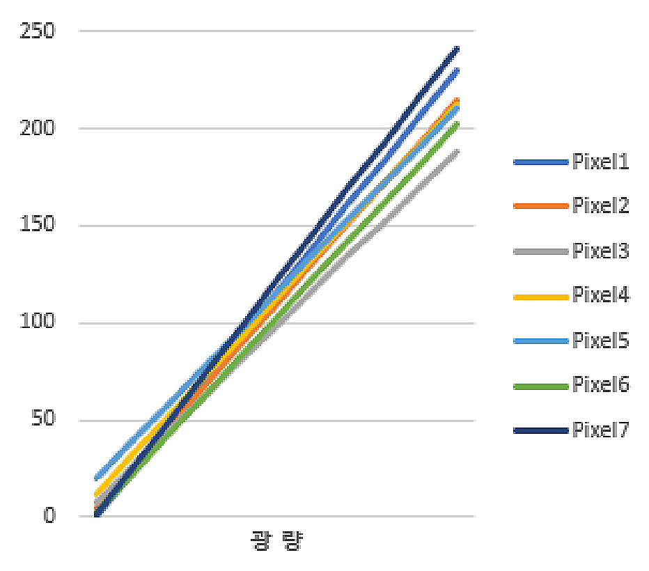
Figure 24 – FFC Calibration Graph (1)
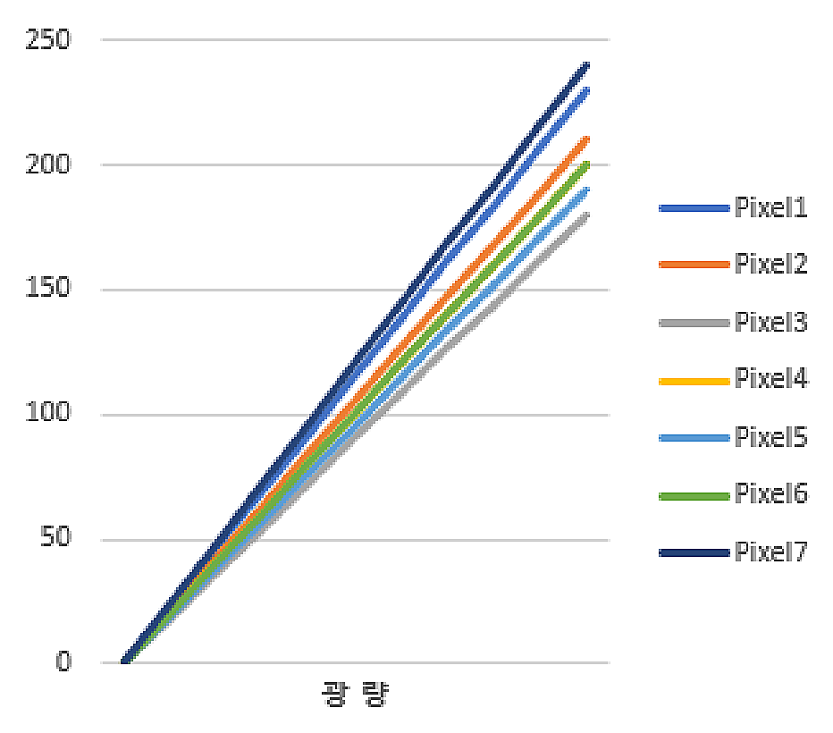
Figure 24 – FFC Calibration Graph (2)
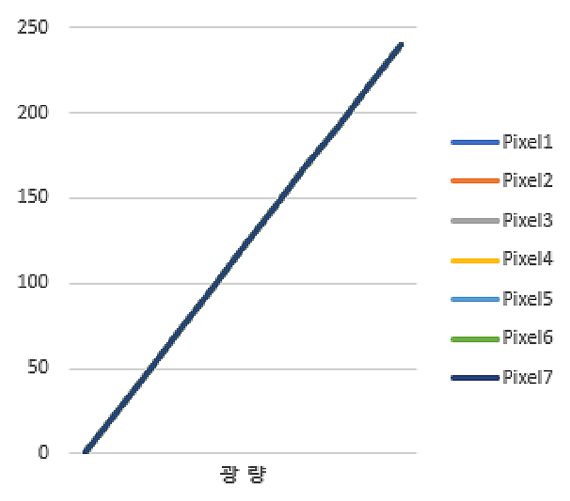
Figure 24 – FFC Calibration Graph (3)
Feature
Value
Description
Black Calibration
Command
Runs Black Calibration.
White Calibration
Command
Runs White Calibration.
FFC Save Load Flash Select
0 ~ 3
Selects the area for saving/loading FFC data.
FFC Save
Command
Saves FFC data to the selected flash area.
FFC Load
Command
Loads FFC data from the selected flash area.
FFC Abort
Command
Forcefully aborts the currently running FFC function.
FFC Function Process Status
(Read Only)
Checks the operating status of the FFC function. - Complete : FFC function complete - Get Black Image : Acquiring black image - Get White Image : Acquiring white image - Black Calibrating : Black calibration in progress - White Calibrating : White calibration in progress - FFC Erasing : Erasing FFC data - FFC Saving : Saving FFC data - FFC Loading : Loading FFC data
FFC Function Process Status Update Feature
Command
Updates FFC Function Process Status.
＊To stabilize power consumption and temperature, when the FFC function is disabled, FFC-related functions do not operate. ‘FFC Enable’
After changing it to 'On', you must perform Calibration, Save, Load, etc.
＊Defect correction must be performed before FFC, and calibration must be performed under the condition that the defect filter is enabled for accurate correction.
Images can be printed.
＊'Black Calibration' must precede 'White Calibration', and 'Black Calibration' and 'White Calibration' must be performed before product shipment.
Calibration is performed before shipment. Perform ‘White Calibration’ in the actual usage environment (lens fastening, etc.) to
The brightness difference can be corrected, and if necessary, you can start again from 'Black Calibration'.
Black Calibration corrects the image in an environment with zero light intensity (shielding).
Before After
White Calibration acquires and corrects bright images from actual use environments (lenses, etc.). A subject with uniform brightness
By capturing an object (or lighting), the image is less than 200 DN on average, shading the edge of the sensor or other external environments.
Correct the brightness difference as shown in the graph below.
Before After
Figure 25 – Black Calibration Image & Histogram (1)Figure 26 – White Calibration Image & Histogram (2)
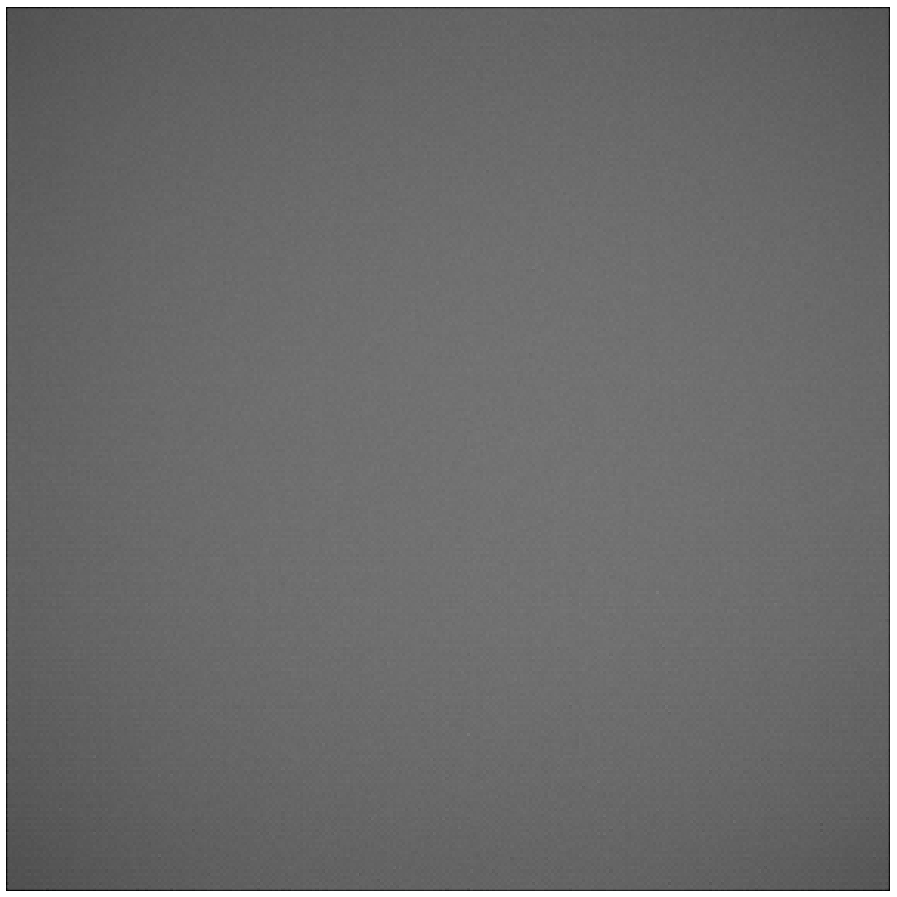
Figure 26 – White Calibration Image & Histogram (3)
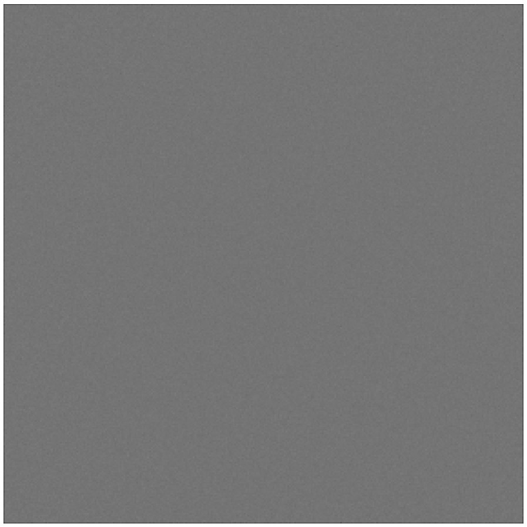
Figure 26 – White Calibration Image & Histogram (4)
4.9 Sharpness Enhancement
Sharpness Enhancement is a function that emphasizes the outlines in an image and makes them sharper. Sharpness
Depending on the enhancement setting, you can obtain a clearer image, but noise may also be emphasized.
Brightness adjusts the brightness of the image. The setting value of 512 (based on 12 bit) increases the brightness by approximately 32 DN in an 8 bit video.
Sets the Histogram Max value. Brightness corresponding to the setting is stretched to 4095.
＊Ex) When Min = 320, Max = 2000 are set, 20DN and 125DN based on 8 bits are stretched to 0DN and 255DN, respectively.
4.10.4 Auto Contrast
Auto Contrast is a function that automatically corrects the image by setting the factor and target. The factor setting value is set to the target.
Correct the image by stretching it to the set value. Factor Low and Factor High are the lowest and lowest pixels in the entire image, respectively.
This is the upper percentage value, and Target Low and Target High are 12bit DN values (0~4095).
Feature
Value
Description
Auto Contrast Mode
Off
- Off : Manually set Contrast and Brightness - Once : Turns Auto Contrast off when each factor reaches the target brightness - Continuous : Continuously adjusts Contrast and Brightness
Once
Continuous
Auto Contrast Factor Low
0 ~ 50 (Unit : %)
Sets Auto Contrast Factor Low. This is the lower percentile of all image pixels.
Auto Contrast Factor High
0 ~ 50 (Unit : %)
Sets Auto Contrast Factor High. This is the upper percentile of all image pixels.
Auto Contrast Target Low
0 ~ Auto Contrast Target High-1 (Unit : 12bit DN)
Sets Auto Contrast Target Low. Brightness (DN) corresponding to Auto Contrast Factor Low is stretched to the target brightness (DN).
Feature
Value
Description
Auto Contrast Target High
Auto Contrast Target Low+1 ~ 4095 (Unit : 12bit DN)
Sets the Auto Contrast Target High value. Brightness (DN) corresponding to Auto Contrast Factor High is stretched to the target brightness (DN).
Contrast Update Feature
Command
Updates Contrast, Brightness, Histogram Stretch Min, and Histogram Stretch Max.
＊If the original video is too dark, noise may increase.
4.11 Sensor Cooling Control
This function controls the sensor temperature. The sensor temperature that guarantees the best quality is 15℃. for this
A thermoelectric cooler is built inside the sensor.
Sensor temperature can be controlled automatically/manually. In automatic mode, the Sensor Cooling Target set temperature (℃) is
Applies to Cooling. Voltage is controlled by comparing sensor temperature and case temperature in real time. Manual mode is
Regardless of the target temperature, the Sensor Cooling Voltage set voltage (V) is applied to cooling. both modes
The voltage applied to actual cooling can be checked in Sensor Cooling Applied Voltage. The default setting is
Same mode, target temperature is 15℃.
Feature
Value
Description
Sensor Cooling Auto
Off
Enables or disables Sensor Cooling Auto.
On
Sensor Cooling Target
10 ~ 40 (Unit : ℃)
Sets the sensor target temperature. This setting is valid only when Sensor Cooling Auto is On.
Sensor Cooling Voltage
-6 ~ 6 (Unit : V)
Sets the voltage applied to sensor cooling. This setting is valid only when Sensor Cooling Auto is Off.
Sensor Cooling Applied Voltage
(Read Only) (Unit : V)
Actual voltage applied to cooling.
Sensor Cooling Voltage Feature
Command
Updates Sensor Cooling Applied Voltage.
＊Sensor temperature and case temperature can be found in ‘Device Temperature Selector’ and ‘Device Temperature’ in the ‘Device Control’ category.
You can check. You can update the current temperature using the 'Temperature Update Feature'.
＊The case temperature displayed in 'Device Temperature' and the case temperature applied to the cooling algorithm are those of the camera's internal frame.
It's temperature.
＊Power consumption may increase depending on the degree of sensor cooling. Target temperature (automatic) considering power consumption and image quality
mode) or voltage (manual mode).
＊The maximum cooling range of the built-in thermoelectric cooler is 40℃. In automatic mode, the sensor temperature and case temperature
The target temperature is automatically adjusted so that the difference does not exceed 40℃. Therefore, the case temperature is 40℃ higher than the target temperature.
If it rises, the sensor temperature may also rise, and additional heat dissipation measures must be taken as necessary.
＊Heat generation may increase depending on the voltage applied to cooling. When setting voltage in manual mode, Sensor temperature and Case
Both temperature and ambient temperature must be considered.
4.12 User Set Control
This is a function to save or load values set by the user.
Feature
Value
Description
User Set Selector
Default
Selects the area to save/load. - Default : Factory settings area; User Set Load only - User Set 1, 2, 3 : User-configurable save/load areas
User Set 1
User Set 2
User Set 3
User Set Load
Command
Loads camera settings from the selected area.
User Set Save
Command
Saves camera settings to the selected area.
＊Save/Load is not possible for some settings. (Refer to Appendix D)
4.13 Transport Layer Control
This item sets the bit rate and number of lines through link configuration.
Feature
Value
Description
CXP Link Configuration
CXP6_X1
- CXP6_X1 : 6.25Gbps x 1CH - CXP10_X1 : 10Gbps x 1CH - CXP12_X1 : 12.5Gbps x 1CH
CXP10_X1
CXP12_X1
＊The 'CXP Link Configuration' supported by model is as follows.
Table 7 - CXP Link Configuration
Model
CoaXPress Link Configuration Support
All models
CXP6, 10, 12 / 1CH
# Appendix A. Maximum Frame Rates
Max depending on Image Size(Height) and CXP Link Configuration. Frame Rate varies.
① HX-A130SW
Table 8 - HX-A130SW Max. Frame Rate
ROI Size (H x V)
CXP Link Configuration
ADC bit
Pixel Format
Max. Frame Rate(fps)
1296 x 1032
CXP12 CXP10 CXP6
8
Mono 8
134.73
10
Mono 8
125.26
Mono 10
12
Mono 8
71.52
Mono 10
Mono 12
1296 x 516
CXP12 CXP10 CXP6
8
Mono 8
260.68
10
Mono 8
242.36
Mono 10
12
Mono 8
138.38
Mono 10
Mono 12
② HX-A530SW
Table 9 - HX-A530SW Max. Frame Rate
ROI Size (H x V)
CXP Link Configuration
ADC bit
Pixel Format
Max. Frame Rate(fps)
2592 x 2056
CXP12 CXP10
8
Mono 8
131.92
10
Mono 8
119.64
Mono 10
12
Mono 8
70.95
Mono 10
Mono 12
CXP6
8
Mono 8
107.08
10
Mono 8
106.75
Mono 10
79.76
12
Mono 8
70.95
Mono 10
Mono 12
53.54
2592 x 1028
CXP12 CXP10
8
Mono 8
253.93
10
Mono 8
230.25
Mono 10
12
Mono 8
136.55
Mono 10
Mono 12
CXP6
8
Mono 8
206.10
10
Mono 8
205.46
Mono 10
153.51
12
Mono 8
136.55
Mono 10
Mono 12
103.05
# Appendix B. Hardware Propagation Delay
Propagation Delays on Input Lines Propagation Delays on Output Lines